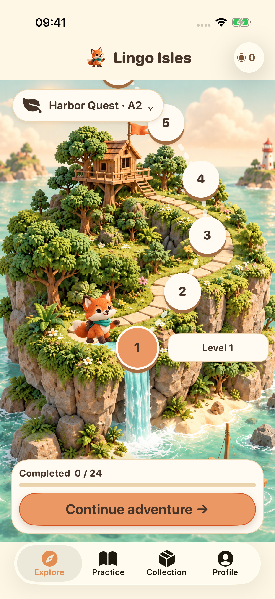
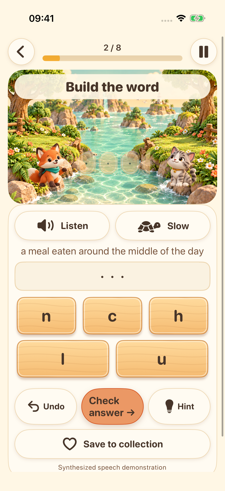
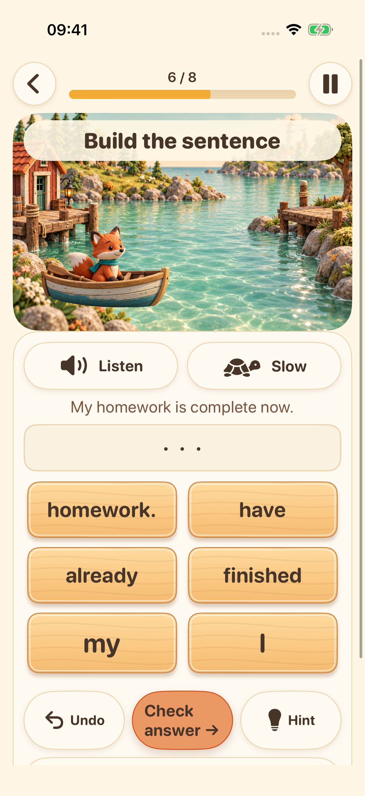
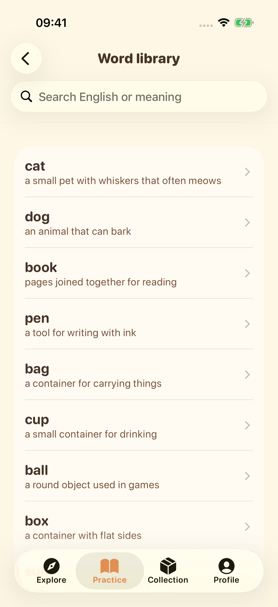

Your next island awaits
Choose your learning stage and follow a trail of short English exercises.
Explore four learning islands. Listen, build words, put sentences together, and give your voice a try — one small discovery at a time.
Explore the adventurePreparing for launch on iPhone and iPad


Choose your learning stage and follow a trail of short English exercises.

Listen to system speech and arrange letters to practise English spelling.

Put words in order and explore how English sentences fit together.

Explore the word library, save favourites, and revisit what you have learned.

Record, listen back, and try again. Optional on-device transcription is available on supported devices. This is practice, not pronunciation scoring.
The interface supports 16 languages. Learning explanations are available in English and Simplified Chinese; other languages use clearly marked English explanations when no translation is available.
Learning content and progress are stored on your device. No account or developer-operated cloud sync is required. Voice resources depend on your device; advertising and privacy services need a network connection.
Profiles under 18, or without an age group, do not start the advertising flow. For adults, ads depend on privacy choices and availability. Watching reward ads is optional.